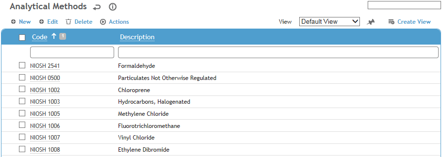
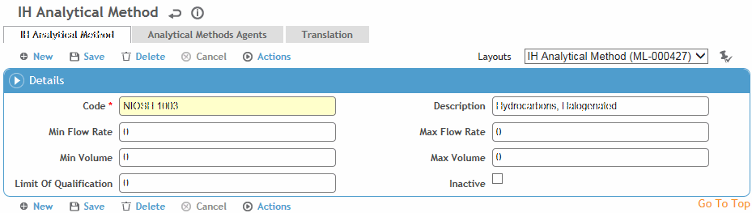

This table contains the types of analysis (e.g. OSHA, NIOSH) that can be done on an Industrial Hygiene sample to analyze agents.
To filter the list of records, enter a few characters in one or more of the fields at the top followed by an asterisk, then press Enter.

Click a link to open a record, or click New to define a new analytical method.

Enter a Code and Description for the analytical method.
Enter the Min/Max Flow Rate, Min/Max Volume, and Limit of Quantification.
To link the method to an agent, click New on the Analytical Methods Agents tab. Select an agent (from the AgentHazard table). If this method should be the default analytical method for this agent, select the Default checkbox (this method can be defined as the default method for multiple agents).
Click Save.